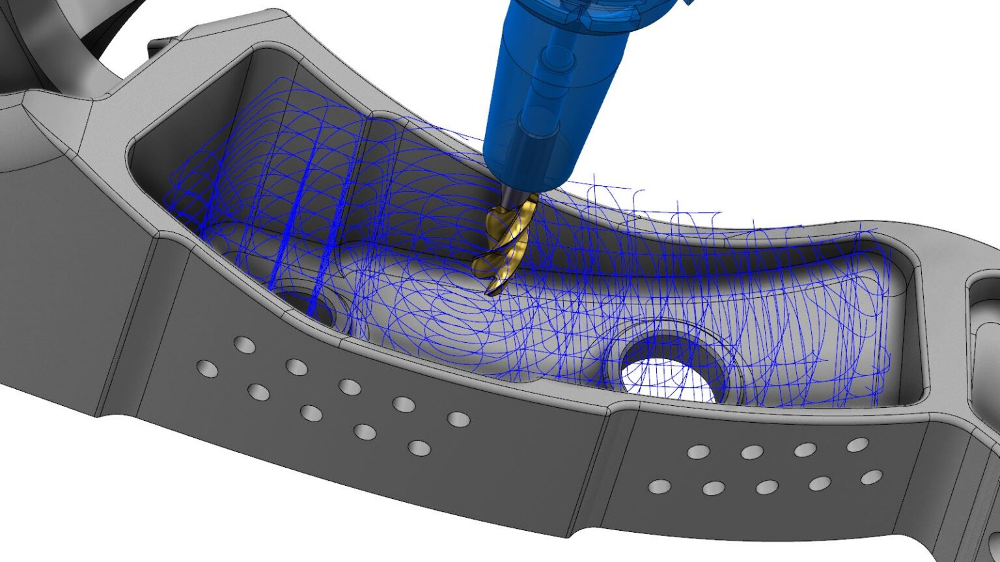
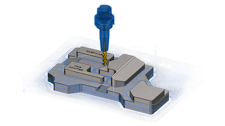

Mastercam 快问快答：从三轴到五轴，这套 CAM 到底帮你省了多少编程时间？
整理了 7 组机加工程序员常问的 Mastercam 问题——动态刀路、多轴模块、套料排版、钻孔循环、2026 新功能，全是干货。
整理一篇关于 Mastercam 的快问快答，把机加工圈子里常聊的那点事儿压缩成 7 个问题。
Mastercam 到底是什么？跟 AutoCAD、UG 有啥区别？
一句话：Mastercam官网 是机加工程序员用的 CAM 软件，输入图纸/模型，输出机床能认的 G 代码。跟 AutoCAD（画图用）和 UG（从设计到加工一条龙但偏重设计端）的定位不同，Mastercam 只干加工这一件事，但干得够深——二维铣削、三维曲面、车削、多轴五轴、Router 板材、线切割，几乎覆盖了车间里能见到的所有金属加工工艺。
它的核心竞争力是动态运动（Dynamic Motion）技术——2017 年推出的动态开粗刀路至今还是行业标杆，毛坯余量分布不管多乱，都能按实际余量规划轨迹，空切少、满刀多、循环时间短。

什么样的车间/程序员需要装 Mastercam？
两类人是主力用户。第一类是已经在干三轴或多轴加工的车间——从传统 2D 外形铣、钻孔镗孔，到 3D 曲面精加工、叶轮叶片五轴联动，Mastercam 的刀路模块能覆盖从试生产到量产的全流程。第二类是工艺需要自动化的批量车间——板式家具厂的 Router 套料排版、精密五金厂的 ATP 自动编程，这套链路靠 Mastercam 串起来。
刚入行的编程学徒也适合用它练手：界面逻辑比较清晰，从二维铣削到多轴有现成的学习路径，社区教程也多。
安装和授权流程是什么样的？
Mastercam 走的是年费订阅制，安装包从官方下载渠道获取，购买后会拿到一个激活码或网络许可服务器。安装时先装主程序，再装后处理库（后处理是跟机床控制器对接的关键，不同机床的 G 代码格式不一样），最后插 U 盘加密狗或激活在线许可就能用。安装过程本身没什么坑，反而是后处理定制经常需要单独花钱让后处理工程师调——这是新手最容易忽略的隐形成本。
核心功能挑重点说：动态刀路、OptiRough 开粗到底牛在哪？
普通开粗是一层一层往下剥，假设毛坯是规则料块。但铸锻件、拼焊件的毛坯余量分布毫无规律——某些区域一刀下去空切，某些区域瞬间满刀。Mastercam 的解法是按三维空间实际余量规划轨迹：材料在哪儿就把刀往哪儿送，支持下行（stepdown）与上行（stepup）双向切削，凸台、斜面顺路就带掉。
2026 版还给 OptiRough 加了临界深度（Critical Depths）——复杂几何里常夹着一些平缓平面区域，传统动态刀路要么绕开留残料要么走低效轨迹，2026 版能智能识别平坦区、用更高效的方式处理，在保持表面质量的同时缩短循环时间。去mastercam文档翻一下临界深度的参数设置说明，能看到更细的调优细节。官方给的数据是编程省数小时、加工再省数小时，零件越复杂差距越大。

Router 板材套料和多轴五轴是怎么一回事？
Router 套料解决的是板材下料省料的问题。标准套料快速直观、规则排布；高级套料用 TrueShape 按零件真实轮廓嵌套——凹形里塞凸形、异形件互扣，上一张板剩下的边角料登记入库，下批小件自动往废料上排。贵金属和铝板车间这一项直接省钱。套料排好后每个零件的刀路自动搬到对应位置，改排版不用重编刀路。
多轴五轴分两大类：定轴多轴（3+2/定位五轴）刀轴转到固定角度后按三轴方式切削，安全易学，车间上多轴的第一步；联动五轴刀轴在切削过程中连续变化，用在叶轮、整体叶盘这类曲面与姿态必须联动配合的零件。2026.R2 版本对多轴做了针对性升级——牛鼻刀自动倾斜碰撞控制、4 轴 Swarf 侧刃精铣质量提升、安全平面计算优化让空行程更短。
新手容易踩的坑有哪些？
三个高频坑。第一，钻尖补偿（tip compensation）不开——图纸标的是通孔深度，钻出来差一个钻尖锥度，孔深永远不准。第二，后处理没调对——同一条刀路，FANUC、西门子、发格控制器的循环代码格式不一样，G81 可能变成 G85，甚至直接报语法错误。第三，毛坯模型不准——OptiRough 对毛坯定义的准确性敏感，铸锻件毛坯模型跟实物差太多，动态刀路的效率优势发挥不出来。
还有，深径比超过 5 倍孔径就要用啄钻或断屑循环，超过 10 倍优先考虑深孔钻专用刀具，硬用普通钻孔循环大概率断刀。
2026 版值得升级吗？老版本还能用多久？
如果你的车间已经在 2024/2025 上稳定运行，短期内不急着升——老版本的刀路和后处理足够应付日常加工。但如果你对多轴碰撞控制、OptiRough 临界深度这类新功能有刚需，或者后处理出了新版本才有的功能点需要用到，那升级是值得的。订阅制的好处是升级成本不高，而且旧版后处理大概率能直接移植到新版，这比换 CAM 软件划算多了。
最后一句：Mastercam 是机加工编程的「瑞士军刀」——不一定最花哨，但刀路稳定、模块全、生态成熟，从学徒到资深程序员都能用到，值得长期放在你的工具箱里。
这套资料我同步整理到了三个仓库——GitHub、Gitee、GitCode，平时想翻源码或看备份的话，任选一个访问就行。